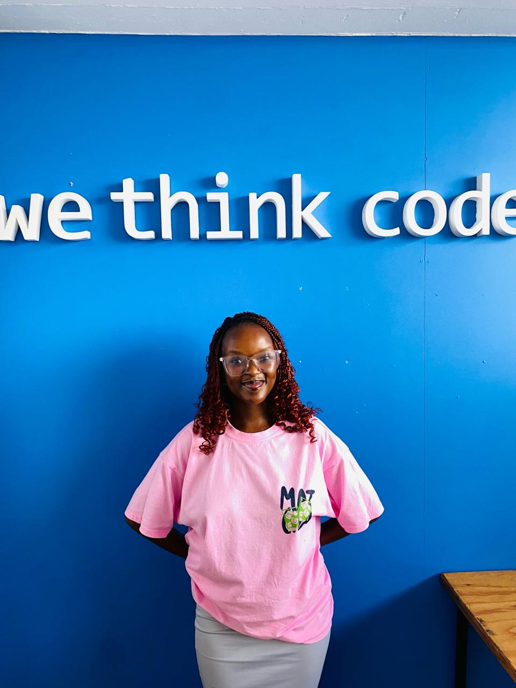

Building software with intention — now reaching for the cloud.
From my first Python script to full-stack web applications, I craft code that solves real problems. Currently specialising in Cloud Computing at WeThinkCode — where great developers are made.
My coding journey began with Python — from simple scripts to a fully functional Uno card game. That early excitement of making something work from nothing never left me.
I deepened my skills through Java, tackling object-oriented principles, building a library catalogue, and contributing to complex projects like Robot World and a Brownfields project — where I also gained hands-on experience with SQL.
Most recently I stepped into web development, co-building WeShare — a social expense tracker helping friends manage shared costs with clarity and fairness.
Now I'm channeling all of that foundation into Cloud Computing, where the most exciting infrastructure challenges live.
Currently pursuing my cloud elective — building expertise in scalable, resilient infrastructure design.
From beginner scripts to full game logic — Python was my first language and remains a core strength.
Comfortable with OOP principles — built multiple projects from personal exercises to team-scale systems.
Co-built WeShare — a full-stack social expense tracker — during our web development phase.
dashed border = currently learning
A fully playable Uno card game built in Python. My first major project — it taught me game logic, state management, and user interaction from first principles.
An advanced Java project where robots navigate and interact in a simulated world. Built with strong OOP principles — one of our most complex team-scale challenges.
A web app tracking shared expenses between friends. Log what was spent, who owes you, and who you owe — making group finances transparent and stress-free.
Click any certificate to view it
My first real project. Went from understanding variables and loops to implementing full game logic with cards, turns, and win conditions.
From simple OOP exercises to building a Library Catalogue and eventually Robot World — a complex multi-class simulation.
Gained hands-on experience with databases — designing, querying, and managing relational data in a real group project setting.
Stepped into full-stack web development. Built a functional web app tracking shared expenses between friends — a complete collaborative product.
Consistent growth beyond just coding — covering cybersecurity fundamentals and generative AI for software engineers.
Currently beginning my Cloud Computing specialization — bringing a strong software foundation into scalable, cloud-native infrastructure.
Open to internships, collaborations, and junior opportunities.